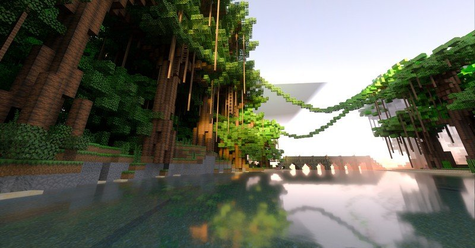
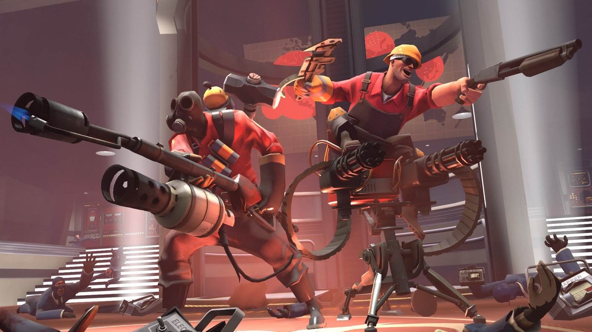
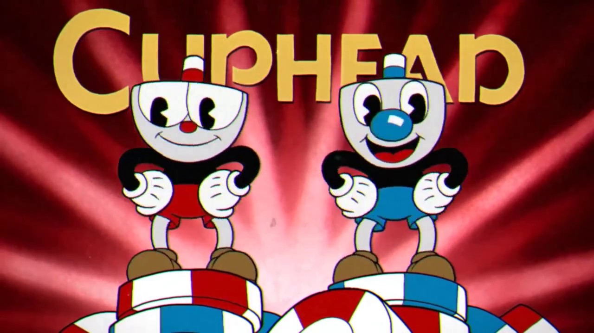

Video games haven't been around for long, but they have risen to one of the most popular hobbies. There are many different genres and many different games. There are bad games, good games, and spectacular games. When talking about the best video games, there are many different ways we decide what the best is. One way we can do this is to look at the games with the most players
The top 3 games with most players playing on steam is:
Jack's favorite game would have to be the epic first person shooter Team Fortress 2!
Brecks's favorite game would have to be the epic run and gun game Cuphead!
